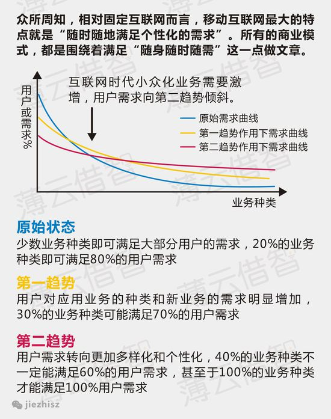

发展
手机改变了人们的生活，也正在成为人们的生活本身，很少有人能脱离手机生活。今天，全球移动电话总数已经超过70亿部，手机更新换代的速度也越来越快，人们正在期待移动通信新的发展与可能.

影响
伴随着智能手机的普及和4G技术的推广，移动互联网时代已经不约而至，O2O、P2P等一系列新词不禁让人眼花缭乱，颇有“乱花渐欲迷人眼”之感。在这些喧嚣背后，移动互联网时代的到来对我们到底意味着什么？

未来
互联网发展第一幕PC互联网走了18年的路，第二幕移动互联网仅仅走了4年，当前移动互联网面临人口红利趋薄、市场规模趋于饱和等问题．随着人工智能的兴起，移动互联网是否将成为下一个PC互联网？
发展来自何时？
- 移动通信技术: 自从第一次1981年的模拟（1G）传输到1992年数字（2G）传输革新以来，大约每十年移动通信技术就要发生一次较大的革新。随后，2001年，3G支持扩频传输达到 至少200kbit/s的峰值比特率．2008年，国际电联-R指定了4G系统的IMT-高级（国际移动电信高级）要求，在2011/2012年之后实现了“真正的”4G，这是指提供移动超宽带（千兆速度）接入的全互联网协议（IP）分组交换网络。
- WIFI: 21世纪初期，世界各地的许多城市都宣布计划构建全市Wi-Fi网络。但这比最初发起人设想的更为困难，结果这些项目大多被取消或无限期搁置。但是有几个是成功的，例如在2005年，美国加州森尼维尔 (加利福尼亚州)，成为在美国的第一个提供全市免费Wi-Fi的城市。2010年5月，伦敦市长鲍里斯·约翰逊承诺到2012年伦敦Wi-Fi普及，几个自治市镇包括威斯敏斯特和伊斯灵顿已经有了广泛的Wi-Fi覆盖。全球已建和建造中的Wi-Fi城市已经超过500个，其中覆盖率最高者为台北市，其已达到全市已有4000个无线接入点（AP, Access Point），未来将至10,000个，覆盖率达到90%，全球主要的大都市的重要公共场所多已有Wi-Fi技术，如伦敦、纽约、台北、香港、新加坡、汉堡、巴黎、华盛顿、上海等。


Wi-Fi vs. 4G
| Wi-Fi Hotspots & Cybercafes | Mobile Broadband (3G or 4G) & Tethering | |
| Location | Must be at the hotspot or cybercafe.
|
Virtually Everywhere: Connect wherever you can get a cellular signal.
|
| Speed | Generally DSL or cable speeds from 768 kbps to 50 mbps.
|
Not as fast as wi-fi;
|
| Cost: | Free to ~$10/per hour
|
Mobile broadband is usually $60/month. Tethering usually costs the same but is in addition to the cell phone data plan.
|
影响于无形之中
- 动社交促进了人们的交流，提高了人们的信息获取能力。
- O2O改变了人们的交易方式。
- LBS使出行变得便捷。
- 移动社交成客户数字化生存的平台： 在移动网络虚拟世界里面，服务社区化将成为焦点。社区可以延伸出不同的用户体验，提高用户对企业的黏性。
- 移动互联网改变商业格局： 科技公司的品牌变得越来越有影响力．全球企业影响力格局正在改变，2014年全球市值最高的10家企业，科技企业占据四席． 全球市值最高的苹果公司在2011年总共卖出了4800万部移动设备,而同期苹果卖出的笔记本以及Mac机的数量则仅为490万台。
- 移动定位服务提供个性化信息： 随着随身电子产品日益普及，人们的移动性在日益增强，对位置信息的需求也日益高涨，市场对移动定位服务需求快速增加。
- 移动支付的春天：数据研究公司IDC的报告显示，2017年全球移动支付的金额将突破1万亿美元。强大的数据意味着，今后几年全球移动支付业务将呈现持续走强趋势。
截至2014年4月，我国移动互联网用户总数达8.48亿户，在移动电话用户中的渗透率达67.8%；手机网民规模达5亿，占总网民数的八成多，手机保持第一大上网终端地位。我国移动互联网发展进入全民时代。
行为影响
行业影响

未来在何方？
近日中国三大运营商公布了12月数据，三大运营商2014年度运营数据出齐。至2014年底：中国移动的移动电话用户数8.07亿，净增用户3900万；中国联通用户数2.99亿，净增用户1800万；中国电信用户1.86亿，净减用户4万；中国市场移动用户总计12.9亿，净增5800万。
- 从市场总量角度，2014年是中国移动通信行业明确的“步入饱和”之年。从2009年到2013年，中国移动通信市场每年净增用户均超过1亿，净增用户相对前一年存量用户的比例均超过10%。2014年总用户净增势头戛然而止，全年净增用户规模降至5800万，净增相对存量的比例降至4.7%。
- 2016年百度创始人李彦宏提出，期待在互联网的下一幕中，“真正让人工智能迅速渗透到各个行业，改变我们的社会”，让人工智能技术解放全人类。
AI时代真的会如此迅速地取代移动时代吗？

▲ App 整体使用量增长显著按年上升 11%。
 在中国智能手机市场早已饱和。虽然每个月仍有5千多万台的新手机进入市场，但其中90%的购机者都是通过新手机淘汰老手机，最终在过去12个月中，手机活跃用户的整体增长率只有6%
在中国智能手机市场早已饱和。虽然每个月仍有5千多万台的新手机进入市场，但其中90%的购机者都是通过新手机淘汰老手机，最终在过去12个月中，手机活跃用户的整体增长率只有6%